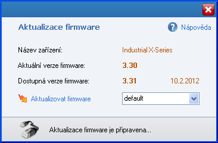
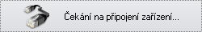
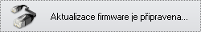
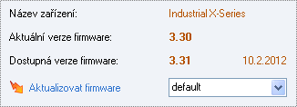
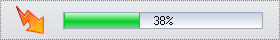

|
|
Funkce Aktualizace firmware zkontroluje jestli pro vaše zařízení existuje nová verze firmware, a pokud ano pak tuto novou verzi stáhne a nainstaluje do vašeho zařízení. "Firmware" je v podstatě ovládací program, který řídí veškeré funkce vašeho zařízení (regulátoru, BMS, ...). Kontrolovat a instalovat nové verze firmware je doporučeno, protože nová verze může obsahovat opravy, vylepšení a nové funkce pro vaše zařízení.
Pozn: funkce aktualizace firmware vyžaduje internetové připojení.

Při aktualizaci firmware postupujte pozorně podle následujících kroků:
1. Připojení zařízení Po otevření okna Aktualizace firmware začne aplikace vyhledávat připojené zařízení.

a) ujistěte se, že je zařízení (regulátor, BMS, ...) připojeno k USB modulu. b) zapněte napájení zařízení, během okamžiku by měla aplikace rozpoznat připojené zařízení. c) pokud nedojde k rozpoznání zařízení, vypněte napájení zařízení a opět zapněte.
Jakmile dojde k rozpoznání připojeného zařízení, zobrazí se informace "Aktualizace firmware je připravena", nyní můžete pokračovat dalším krokem.

2. Informace o verzi firmware Po úspěšném rozpoznání zařízení dojde ke stažení konfiguračních souborů, zobrazí se informace o zařízení a verzi firmware, a aktivuje se tlačítko Aktualizovat firmware.

Aktuální verze firmware - verze firmware ve vašem zařízení. Dostupná verze firmware - verze firmware kterou lze stáhnout a nainstalovat do vašeho zařízení, zobrazuje se vždy nejnovější dostupná verze. Napravo od dostupné verze je pak zobrazeno datum vydání firmware.
Pokud je dostupná verze vyšší než verze aktuální (jak je znázorněno na obrázku), pak je k dispozici nová verze firmware pro vaše zařízení a můžete pokračovat následujícím krokem - aktualizací firmware.
3. Aktualizace firmware Pomocí tlačítka Aktualizovat firmware se spustí proces aktualizace. Nejprve dojde ke stažení souboru firmware z webu společnosti MGM Compro, a následně začne probíhat zápis dat firmware do zařízení. Proces zápisu dat znázorňuje ukazatel průběhu.

Pozor: během celého procesu aktualizace neodpojujte zařízení ani USB modul od počítače. Proces aktualizace nelze přerušit a proto vždy vyčkejte na jeho dokončení. Úspěšné dokončení aktualizace (nebo chyba aktualizace) bude oznámeno pomocí informačního dialogu.
V případě úspěšné aktualizace je vždy nutné zařízení restartovat (vypnout a zapnout napájení), zařízení bude následně znovu inicializováno pro práci s aplikací. V případě chyby aktualizace je nutné celý proces opakovat znovu od kroku 1). Aktualizaci můžete znovu spouštět bez omezení, zařízení nemůže být poškozeno chybnou aktualizací ani opakovanou aktualizací.
Po dokončení aktualizace nové verze firmware také vždy zkontrolujte aktualizace aplikace pro získání nejnovější verze aplikace.
|